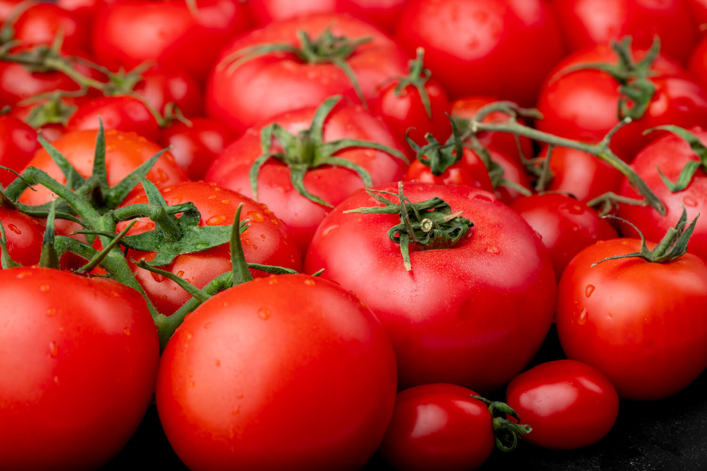
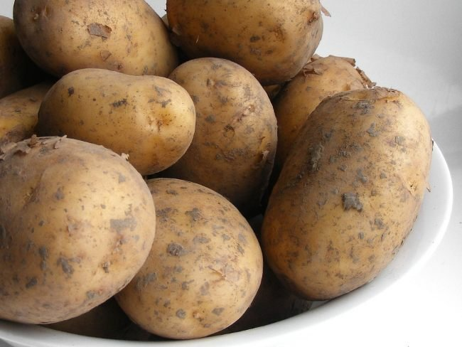
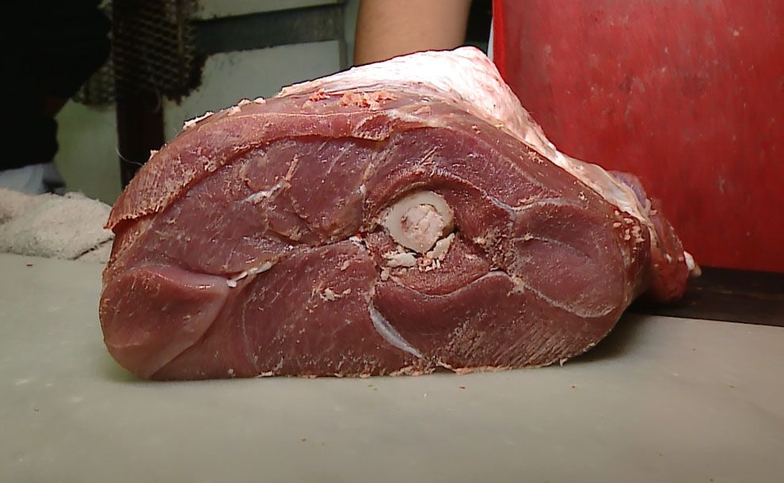
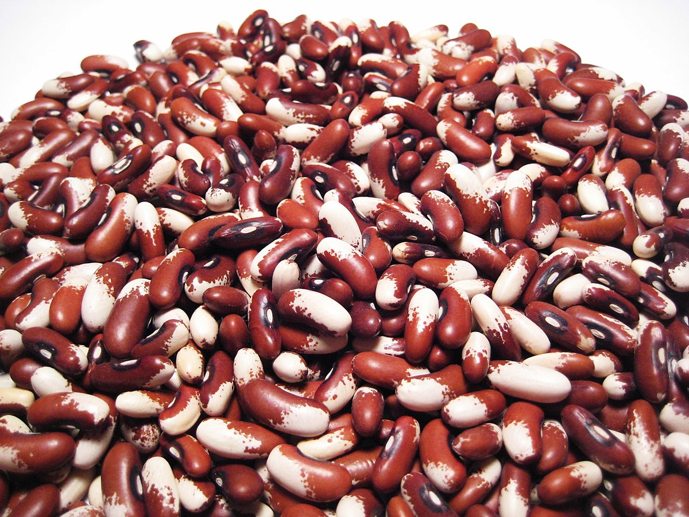
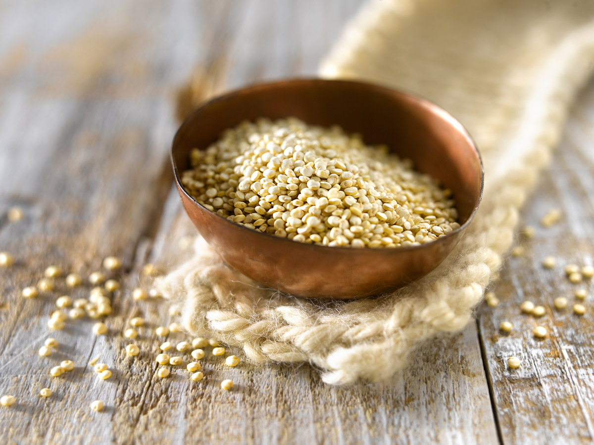

Los Principales alimentos agrícolas y ganaderos:
Tomate
Patata

Maíz
Carne de Alpaca
Frijoles
Quinoa
Al llegar al imperio incaico, los españoles destacaron el éxito de su economía. Los cronistas describieron los productos hallados en los depósitos, alabando la abundancia de la producción agrícola como ganadera. Los europeos también hicieron lo propio con la repartición equitativa de estos productos entre la población. |
las investigaciones recientes muestran que esto no fue así; sino que el éxito del imperio se logró en una correcta administración de la mano de obra, y se afirma que esto logró que el Estado tenga la producción necesaria para la redistribución.
El trabajo para la producción redistributiva era rotativo, entregada periódicamente por los ayllus (pueblo llano) del imperio incaico. Este sistema no fue creación incaica pues estaba basado en las formas tradicionales de administración, los Incas llevaron este sistema a su máxima expresión almacenando producción y redistribuyéndola conforme a las necesidades e intereses estatales.
La base de la economía fue la agricultura; las tierras eran comunales. Cada familia tenía sus tierras para cultivarlas y alimentarse, donde las familias más numerosas, recibían mayor cantidad de tierras.
|  Tomate |
 Patata |
Maíz |
|  Carne de Alpaca |
 Frijoles |
 Quinoa |
Cabe destacar que los incas cultivaron hasta 200 diferentes tipos de patatas, además en la época del imperio incaico hay que entender que el entorno de una economía ajena, al uso de la moneda en la cual solo existía el «trueque» (intercambio).
Existieron dos grupos de tratantes mercaderes de importancia los llamados «tratantes chinchanos» y los «tratantes norteños». Los chinchanos tenían dos rutas, una ruta marítima en la que iban hacia al norte en balsas llevando cobre y trayendo mullu (una especie de molusco bibalvo marino), esta ruta llegaba hasta Manta y Portoviejo, existió otra ruta terrestre que se dirigía desde Chincha hacia el Cuzco. |
Inicio |
Definición |
Caída |
Origen |